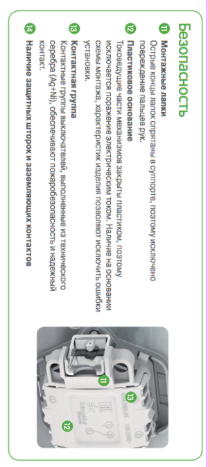

Качественный электромонтаж, Стаж 12 лет. Частный электрик, недорого.
Тел. 8 903 594 95 24 Николай.

Монтаж электрических установочных изделий.
Частный электрик.
Что нужно знать, чтобы правильно смонтировать установочные изделия.
Напомним, что к установочным изделиям относятся различные выключатели, розетки, свето – и терморегуляторы (термостаты), приборы дистанционного управления освещением (ручной пульт с памятью на несколько “адресов”), датчики движения (применяются для включения света, вентиляции и охранной сигнализации) и т. д.
Если вы решили установить перечисленные изделия самостоятельно, не прибегая к услугам специализированных организаций, советуем прислушаться к следующим рекомендациям.
И если вы сумеете воспринять их как понятное руководство к действию – у вас все получится.
Общие сведенья:
- Стандартные розетки, выключатели и переключатели рассчитаны на ток 10 А, а это значит, что суммарная мощность энергопотребителей, подключаемых к одному из этих изделий, не должна превышать 4 кВт.
- Для монтажа импортных установочных изделий под скрытую электропроводку необходимы монтажные коробки диаметром 60 мм и глубиной не менее 40 мм (обратите внимание на то, что отечественные монтажные коробки имеют диаметр 70 мм).
- Если вы используете рамку более чем на один пост (изделие), то учтите, то расстояние между центрами установочных изделий при монтаже их в рамке на 1-4 поста обычно составляет 71 мм. Используя одиночные коробки, очень сложно добиться соблюдения этого размера: проще использовать специальные монтажные коробки на несколько постов. Существуют коробки на 2 и 3 поста или специальные – с соединительными муфтами, расстояние между центрами которых соответствует указанному стандарту.
- Для стен и перегородок из дерева или другого легковоспламеняемого материала используются специальные монтажные коробки с пределом огнестойкости не менее 850 градусов по Цельсию.
Если вы располагаете небольшими средствами и электроустановочные изделия немецкого, итальянского или французского производства для вас слишком дороги, лучше приобрести недорогую отечественную розетку или выключатель. Выглядят они не слишком презентабельно, но по качеству значительно превосходят продукцию неизвестного азиатского производства, единственное достоинство которой привлекательный внешний вид.
Розетка и выключатель.
Просверлите фрезой или выдолбите отверстие на нужном уровне, вставьте монтажные коробки и закрепите их гипсом или алебастром. Монтажные коробки для деревянных или легкосгораемых стен и перегородок (ДВП, ДСП, ГВП и др.) имеют специальные винтовые зажимы.
Монтаж розеток силовых:
- снимите с розетки накладку, выкрутив для этого крепежный винт;
- подсоедините розетку. Отечественные розетки снабжены винтовыми клеммами.
Если же вы используете розетки немецкого производства, отвертка вам не понадобится:
- провод просто вставляется в отверстие, расположенное на задней стороне розетки;
- вставьте розетку в коробку и закрепите винтами.
Можно сделать дополнительное крепление розетки в коробке с помощью двух шурупов:
- наложите на розетку рамку, затем накладку и закрепите последнюю при помощи винта. Выключатели:- подключите выключатель;
- вставьте выключатель в коробку и закрепите распорными винтами;
- наложите на выключатель рамку и защелкните клавишу.
Светорегуляторы, телефонные и телевизионные розетки и другое монтируется аналогичным способом с небольшими изменениями, которые обычно оговариваются при покупке изделий. Желательно приобретать установочные изделия там, где можно получить все необходимые инструкции и схему подключения. А еще лучше доверить работы по установке электрооборудования специалистам.

Сделать электрику в квартире.

Расценки на электропроводку квартир.
Провести электропроводку в новостройке.
Электромонтаж в частном доме.
Электрика в загородном доме.
Сколько стоит замена электропроводки в двухкомнатной квартире?.
Сколько стоит проводка в 3 ком квартире?
Сколько стоит проложить проводку в четырех комнатной квартире?
Сколько стоит сделать внутреннюю проводку?
Стоимость штробление стен.
Электромонтаж двухкомнатной квартиры.
Замена электропроводки в панельном доме.
Электромонтаж проводов в бане.